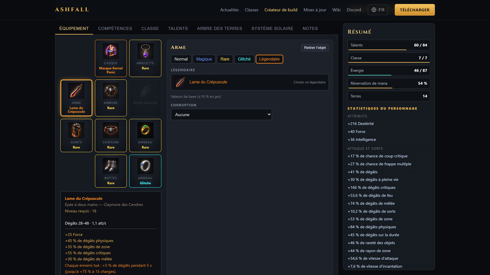
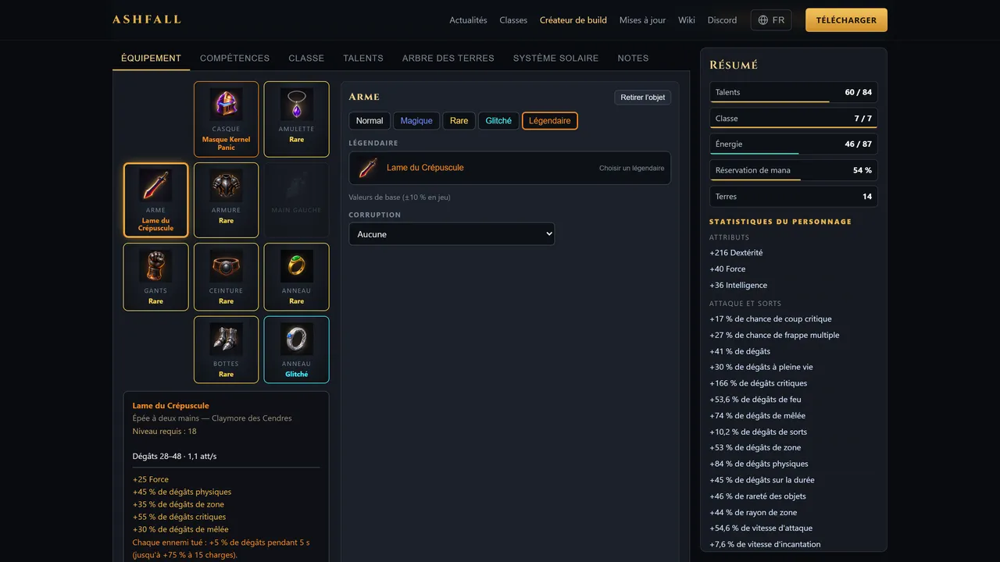
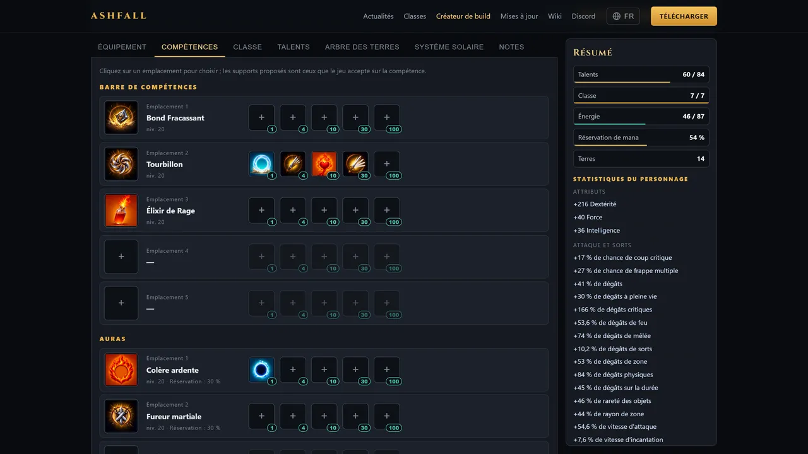
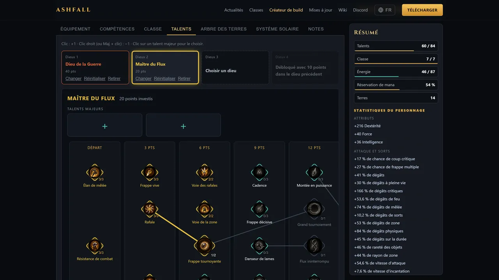
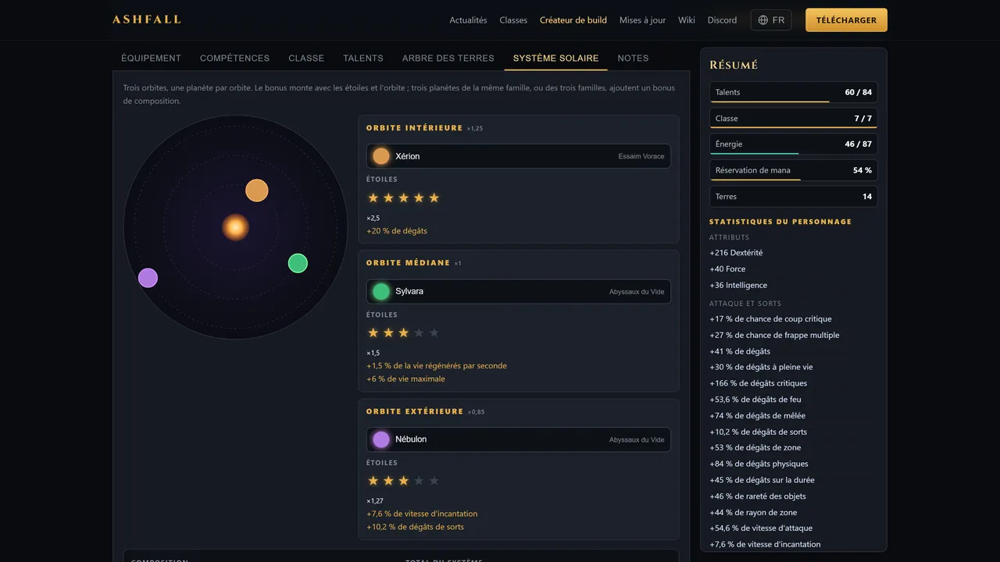

Le créateur de build est en ligne
Planifiez votre personnage sur le site : équipement, compétences et supports, classe, talents, Arbre des Terres et système solaire, avec les vraies règles du jeu.
Tout le personnage, au même endroit
Le créateur de build réunit tout ce qui fait un personnage d'Ashfall : l'équipement des dix emplacements, la barre de compétences avec ses supports, les auras et les runes du Graveur, l'arbre de classe, les dieux et leurs talents majeurs, l'Arbre des Terres et le système solaire. Choisissez une classe et un niveau, le reste suit : points de talent, points de classe, emplacements et niveaux de gemme.

L'objet que vous visez
Pour chaque emplacement, choisissez la rareté, la base et le niveau d'objet : seuls les tiers accessibles à ce niveau sont proposés, avec leur fourchette de valeurs. Préfixes et suffixes respectent les limites du jeu (3 et 3, au plus 2 spéciaux et 2 ultimes). Ajoutez l'énergie, une corruption ou un affixe glitché, ou choisissez directement un légendaire : l'aperçu reprend l'infobulle du jeu.
Compétences et supports
Seuls les supports que le jeu accepte sur la compétence sont proposés, avec le coût en énergie de chaque emplacement. Les auras calculent leur réservation comme en jeu (supports d'aura, réservation réduite ou en vie) et ajoutent leurs statistiques au résumé.

Talents, Terres et étoiles
Les arbres des dieux suivent les règles du jeu : seuils de colonne, prérequis au rang maximum, second dieu ouvert à 10 points. L'Arbre des Terres affiche ses bonus de carte à part, et le système solaire calcule le bonus de chaque orbite selon les étoiles de la planète et la composition des familles.

Un résumé qui vérifie tout
À droite, le résumé additionne les statistiques de toutes les sources — survolez une ligne pour voir d'où elle vient — et signale ce qui ne passerait pas en jeu : points dépassés, énergie insuffisante, niveau requis trop haut, arme requise par une compétence.

Enregistrer et partager
Vos builds restent dans votre navigateur : créez-en autant que vous voulez, dupliquez-les, renommez-les. Copier le lien donne une adresse qui rouvre le build chez n'importe qui, idéal pour le Discord ; Exporter le code donne la même chose sous forme de texte. Les données viennent directement du jeu, en français et en anglais.